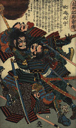

"En esencia, el Arte de la Guerra es el Arte de la Vida"
Sun Tzu fué un general chino que vivió alrededor del siglo V antes de Cristo. La colección de ensayos sobre el arte de la guerra atribuida a Sun Tzu es el tratado sobre dicho tema más antiguo que se conoce. A pesar de su antiguedad, esta obra domina sobre cualquier otra sobre el tema.
La obra de Sun Tzu llegó por primera vez a Europa en el periodo anterior a la Revolución Francesa, en forma de una breve traducción realizada por el sacerdote jesuita J. J. M. Amiot. En las diversas traducciones que se han hecho desde entonces, se nombra ocasionalmente al autor como Sun Wu o Sun Tzi.
El núcleo de la filosofía de Sun Tzu sobre la guerra descansa en estos dos principios:
Todo el Arte de la Guerra se basa en el engaño.El supremo Arte de la Guerra es someter al enemigo sin luchar.  Las ideas de Sun Tzu se extendieron por el resto de Asia hasta llegar a Japón. Los japoneses adoptaron rápidamente estas enseñanzas y, posiblemente, añadieron algunas de su propia cosecha. Hay constancia de que el principal libro japonés sobre el tema, "El libro de los Cinco Anillos", está influido por la filosofía de Sun Tzu, ya que su autor, Miyamoto Mushashi, estudió el tratado de "El Arte de la Guerra" durante su formación como Samurai.
Habitualmente se hace referencia a las culturas orientales como culturas de estrategia y no es pequeña la influencia de Sun Tzu en este desarrollo cultural. Hoy en día, la filosofía del arte de la guerra ha ido más allá de los límites estrictamente "militares", aplicandose a los negocios, los deportes, la diplomacia e incluso el comportamiento personal. Por ejemplo, muchas frases clave de los manuales modernos de gestión de empresas, son practicamente citas literales de la obra de Sun Tzu (cambiando, por ejemplo, ejercito por empresa, o armamento por recursos, sin ir más lejos). Las ideas siguen siendo completamente válidas a pesar de los 25 siglos transcurridos desde que se escribieron.
Una advertencia antes de comenzar: No es un libro "fácil". Conviene leerlo despacio meditando en el sentido de las ideas expresadas en las frases, no quedándose en la cita literal. Solo de esta forma se podrá sacar el máximo provecho a su estudio. Personalmente, lo considero una lectura imprescindible para la formación de un artista marcial.
Que lo disfruteis.
Comentarios a la traducción: El "Libro del Tao" es una obra filosófica muy difícil. Existen muchas traducciones de la misma a diferentes idiomas, y a veces lo que dice una traducción es completamente diferente de lo que dice otra. Considero este trabajo tan correcto como cualquier otro, ya que lo he realizado usando mis conocimientos lo mejor que he podido. Aunque de una lectura superficial se pueden sacar inconsistencias entre diversos capítulos, e incluso frases que parécen no tener sentido a primera vista, esta inconsistencia o falta de sentido es aparente y ya proviene del original. Ya he dicho que es una obra difícil y hay que meditar mucho en el sentido de cada frase, y aún así es posible no captar fácilmente el auténtico significado (en el supuesto de que exista un "auténtico" significado).
Lamentablemente, la obra de Lao Tse parece haberse convertido en una fuente de citas lapidarias. Es muy fácil leer por encima buscando "la frase" que llama la atención, que queda muy bien para encabezar un texto o soltar en una charla, o incluso reinterpretarla de forma que apoye lo que uno quiere decir. Por supuesto, siempre es mejor estudiarlo para eso, que no estudiarlo para nada. En cualquier caso, espero que le saqueis el mejor provecho posible.
Musashi es conocido en Japón como "Kinsei", que significa algo así como "Sacerdote de la Espada". El Libro de los Cinco Anillos encabeza cualquier bibliografía sobre Kendo, y resulta único entre todos los libros sobre artes marciales, en el sentido de que trata la estrategia de guerra a gran escala exactamente de la misma forma que el combate individual. El libro no es una tesis sobre estrategia, sino, usando las palabras del propio Musashi: "una guía para aquellos que desean aprender acerca de la estretegia". Como tal guía, sus contenidos siempre están más allá de lo que los estudiantes son capaces de percibir. Cuanto más se lee el libro, más se encuentra en sus páginas. Se trata, de alguna manera, de "la última voluntad" de Musashi, la llave para abrir el sendero que el había recorrido. Al igual que otros ronin de la época, Musashi podría haber fundado una escuela cuando rondaba la treintena, siendo ya famoso y respetado, y haberse dedicado a disfrutar del éxito. Sin embargo, la opción que siguió fué la de continuar en solitario con su estudio, tal y como había hecho hasta entonces. Incluso en sus últimos años, abandonó la vida confortable que disfrutaba en el castillo de Kumamoto, y vivió dos años más en una cueva, en soledad, y dedicado a la contemplación y a escribir lo que había aprendido.